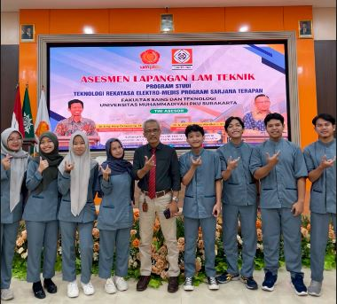
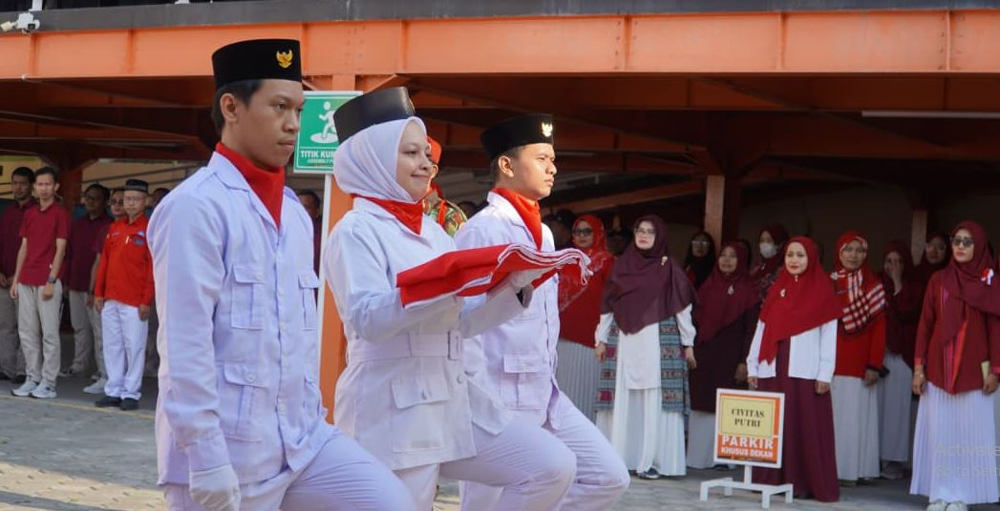
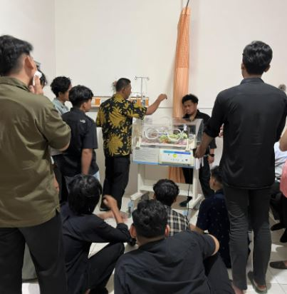
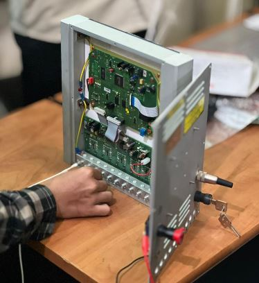
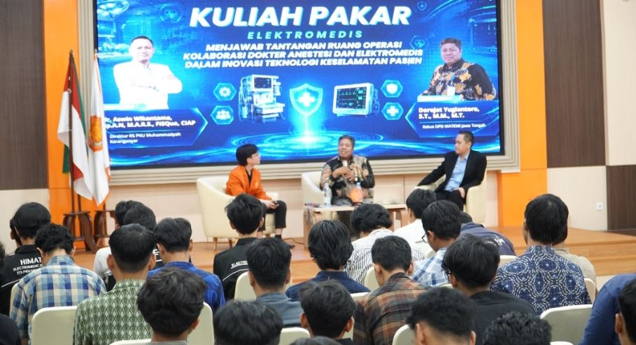

01 / MAHASISWAKegiatan Mahasiswa
Kegiatan bersama menjadi ruang untuk membangun pengalaman, komunikasi, dan kerja sama.
Mengenal lingkungan akademik, kegiatan mahasiswa, dan perkembangan teknologi kesehatan melalui Universitas Muhammadiyah PKU Surakarta.
Jelajahi KampusLingkungan pendidikan untuk mengembangkan pengetahuan, keterampilan, dan pengalaman mahasiswa.

Universitas Muhammadiyah PKU Surakarta menjadi konteks pengembangan pendidikan, pengetahuan, dan keterampilan bagi mahasiswa.
Melalui kegiatan akademik, praktikum, seminar, dan aktivitas kemahasiswaan, mahasiswa dapat memperluas wawasan serta mengembangkan kompetensi.
Kunjungi situs resmi UMPKU ↗Kenali kegiatan dan fasilitas pembelajaran melalui galeri kampus.

01 / MAHASISWAKegiatan bersama menjadi ruang untuk membangun pengalaman, komunikasi, dan kerja sama.

02 / LABORATORIUMMengenal proses pembelajaran dan penerapan teknologi di bidang peralatan kesehatan.

03 / TEKNOLOGIMengenal perangkat elektromedis dan perannya dalam menunjang pelayanan kesehatan.

04 / AKADEMIKKegiatan akademik membantu mahasiswa memperluas wawasan dan mengenal perkembangan bidang keilmuan.
Kenali informasi kampus lebih lanjut melalui situs resmi Universitas Muhammadiyah PKU Surakarta.